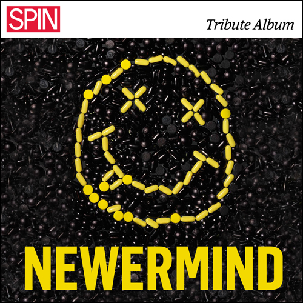
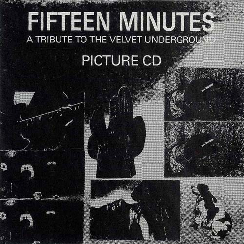
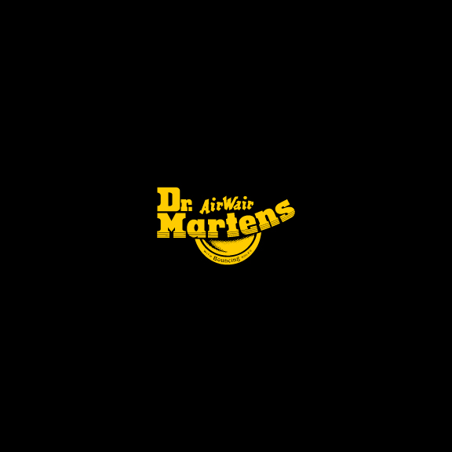
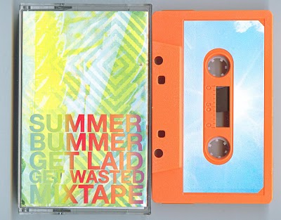
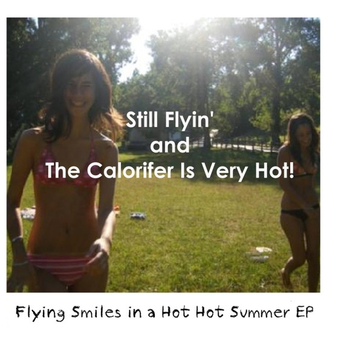
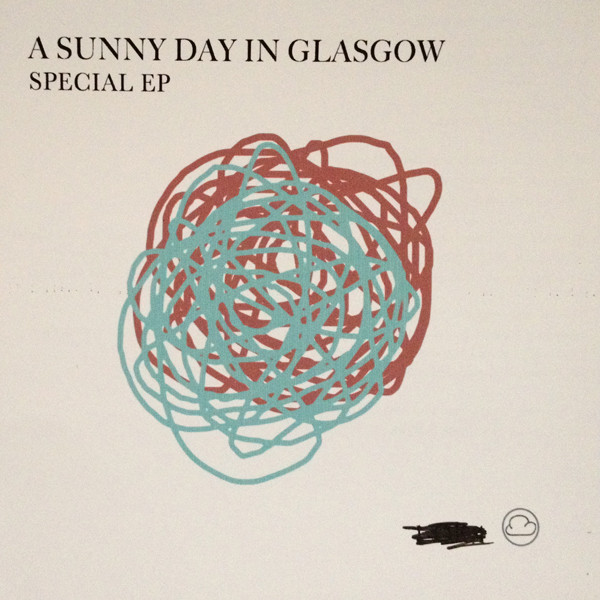
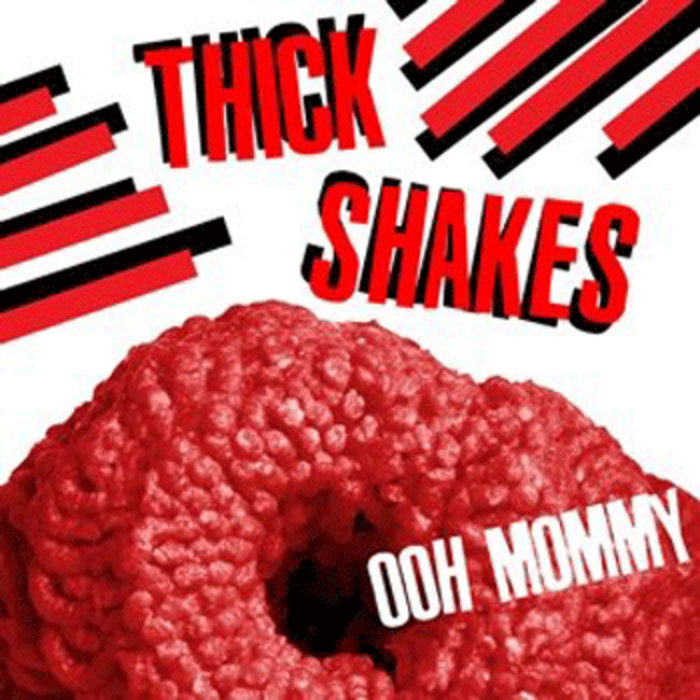
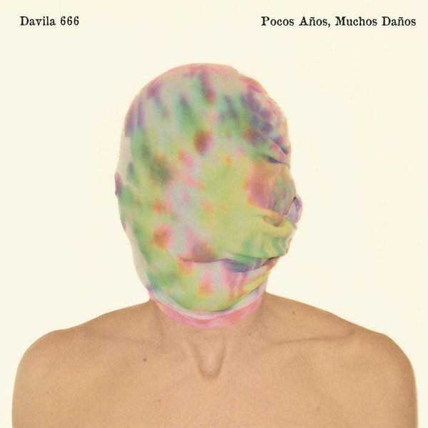
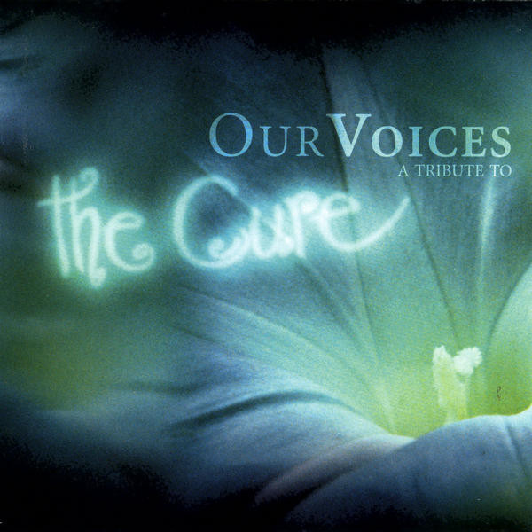

01Lounge Act
Jessica Lea Mayfield – SPIN Presents Newermind: A Tribute Album (2011)
orig. Nirvana

02Here She Comes Now
Nirvana – Fifteen Minutes - A Tribute To The Velvet Underground (1994)
orig. Velvet Underground
03
On Land
Dirty Gold – TV Girl//Dirty Gold Split Digital 7" (2011)
orig. TV Girl
 04
04
The Wall
Porcelain Raft – Pink and White Terraces by S&S (2011)
orig. Yuck
 05
05
Should Have Taken Acid With You
Oberhofer – Internet Single (2010)
orig. Neon Indian
 06
06
Lotta Love
Kind Spirit – Headed For The Ditch (2011)
orig. Neil Young
 07
07
Wet Hair
Teen Daze – The Road Goes Ever On: Showstoppers (2010)
orig. Japandroids

08I Wanna Be Adored
The Raveonettes – I Wanna Be Adored (2010)
orig. The Stone Roses
 09
09
Love Her Madly
Geri X – A Psych Tribute to the Doors (2014)
orig. The Doors

10State Trooper
Flight – Summer Bummer Get Laid Get Wasted Mixtape c46 (2009)
orig. Springsteen
 11
11
Sympathy For The Devil
Orchestre National de Barbès – Alik (2008)
orig. The Rolling Stones
 12
12
Take a Word
Silkies – Never Tell a Lie EP (2013)
orig. Marcy Jo
 13
13
Over the Edge
TV Torso – VA - Holy Holy Holy (2009)
orig. The Wipers

14One Fell Swoop
The Calorifer Is Very Hot! – Flying Smile in a Hot Hot Summer EP (2010)
orig. Chris Knox
 15
15
S. O. S.
Th' Faith Healers – Peel Sessions (1991)
orig. Abba - Live
 16
16
Honey, Honey
Loves Ugly Children – ABBAsalutely (A Flying Nun Tribute To The Music Of ABBA) (1995)
orig. Abba
 17
17
People Are Strange
Camera – A Psych Tribute to the Doors (2014)
orig. The Doors

18Hybrid Moments
A Sunny Day In Glasgow – Special EP (2012)
orig. The Misfits

19Underwear
Thick Shakes – Ooh Mommy (2010)
orig. The Magnetic Fields
20
Surfergirl
Airbird – Internet Single (2010)
orig. The Beach Boys

21Hanging on the Telephone
Davila 666 – Pocos Años, Muchos Daños (2014)
orig. Nerves
 22
22
Pull Down the Shades
Jay Reatard – Stroke - Songs For Chris Knox (2009)
orig. Chris Knox
 23
23
Johnny Get Angry
Cloud Nothings – Tears On My Pillow: Part II (2011)
orig. Joanie Sommers
 24
24
It's Not Unusual
The Wedding Present – Bizarro (2001)
orig. Tom Jones

25Lovesong
Tanzwut – Our Voices - A Tribute To The Cure (2004)
orig. The Cure
 26
26
Just Like Heaven
Dinosaur Jr. – The Edge Of Rock (1990)
orig. The Cure